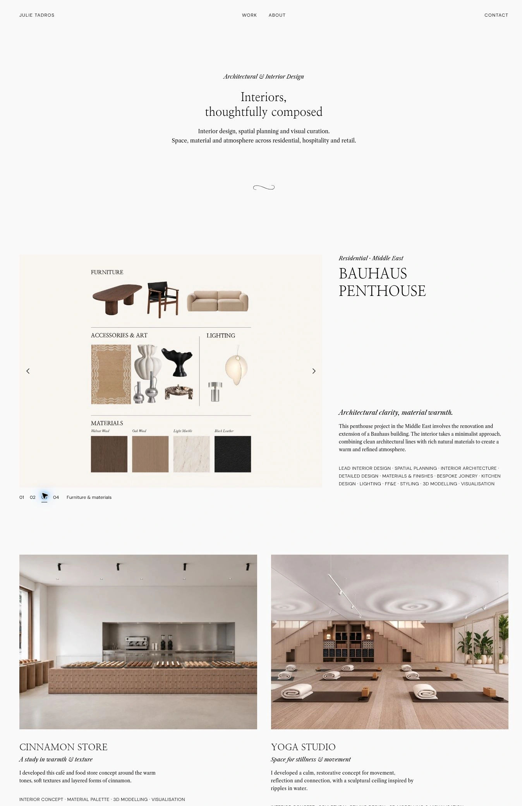

Minimal interior design website
An editorial portfolio for interior design, using quiet typography, generous space and galleries that bring concepts, materials and finished spaces together.

A clear view of the work
Project galleries move between interior views, concept boards, furniture selections and drawings. Short descriptions and contribution summaries make each role clear without interrupting the imagery.
Design approach
Black typography, a pale background and generous spacing create a calm editorial rhythm. Numbered galleries, subtle slideshow transitions and image enlargement support a closer look at the work.
Mobile layouts
The introduction and project gallery adapt to a single-column layout.